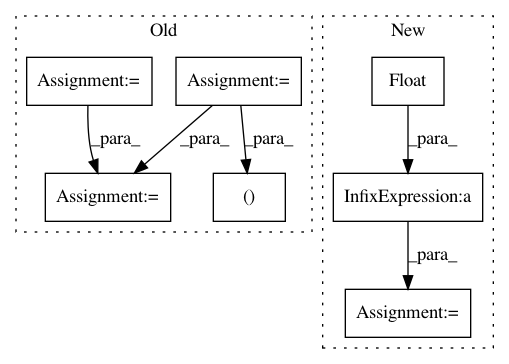

6324799d51a451995a91b76306eae40ccd11f55e,utils.py,,accuracy,#Any#Any#,96
Before Change
def accuracy(batch_data, pred):
(imgs, segs, infos) = batch_data
_, preds = torch.max(pred.data.cpu(), dim=1)
valid = (segs >= 0)
acc = 1.0 * torch.sum(valid * (preds == segs)) / (torch.sum(valid) + 1e-10)
return acc, torch.sum(valid)
def intersectionAndUnion(batch_data, pred, numClass):
After Change
valid = (label >= 0)
acc_sum = (valid * (preds == label)).sum()
valid_sum = valid.sum()
acc = float(acc_sum) / (valid_sum + 1e-10)
return acc, valid_sum
def intersectionAndUnion(imPred, imLab, numClass):
imPred = np.asarray(imPred).copy()
In pattern: SUPERPATTERN
Frequency: 3
Non-data size: 7
Instances
Project Name: CSAILVision/semantic-segmentation-pytorch
Commit Name: 6324799d51a451995a91b76306eae40ccd11f55e
Time: 2018-03-27
Author: jasonhsiao97@gmail.com
File Name: utils.py
Class Name:
Method Name: accuracy
Project Name: danforthcenter/plantcv
Commit Name: 3c8df2fc218bd42544ac0eebb8dbfc6724c27a14
Time: 2019-06-06
Author: noahfahlgren@gmail.com
File Name: plantcv/plantcv/analyze_nir_intensity.py
Class Name:
Method Name: analyze_nir_intensity
Project Name: rtavenar/tslearn
Commit Name: a0c07598ea76cb51a14f329885f0798841be4781
Time: 2019-05-29
Author: johann.faouzi@icm-institute.org
File Name: tslearn/metrics.py
Class Name:
Method Name: itakura_mask